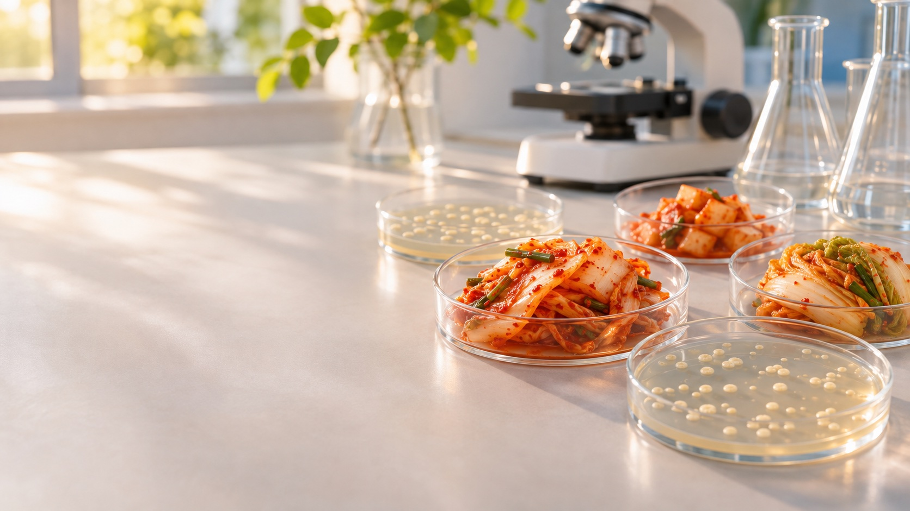
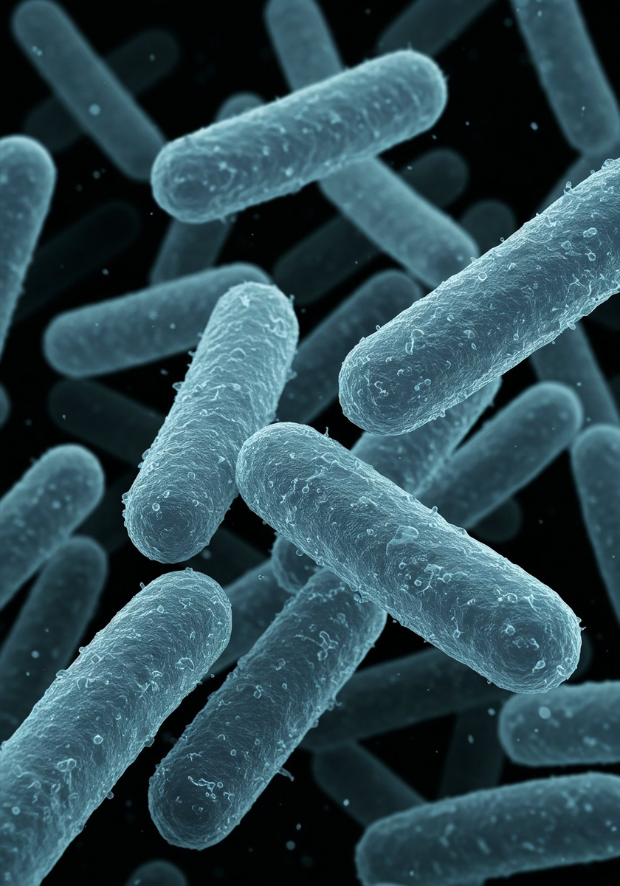
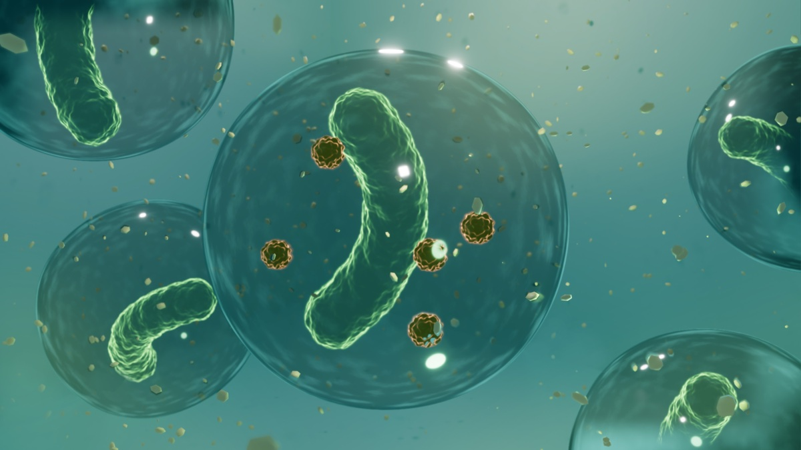
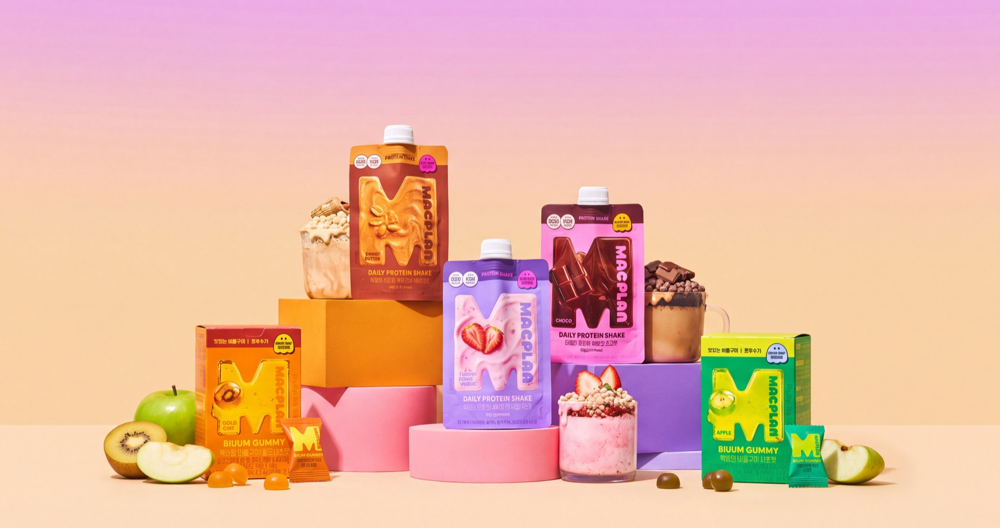

바이오코어 500억 유산균
바이오코어 500억 유산균 쓰리핏 유산균 다이어트
쓰리핏 유산균 다이어트피부 건강
CJLP133
Lactiplantibacillus plantarum
개별인정형인체적용시험
CJ웰케어의 모든 제품은 연구실에서 시작합니다. 김치 속 미생물에서 발견한 가능성을 직접 검증하고, CJ바이오사이언스의 마이크로바이옴 기술을 더해 당신의 일상에 맞는 솔루션으로 완성합니다.


김치는 다양한 미생물이 함께 만들어가는 우리나라의 대표적인 발효식품입니다. CJ는 김치 속 미생물의 다양성에 주목하여 다양한 김치에서 유산균을 분리하고, 균주 하나하나의 특성과 기능을 연구해 왔습니다.
그 과정에서 확보한 3,500여 개의 유산균 가운데 우수한 특성을 가진 균주를 선별하고, 과학적 연구를 통해 각각의 가능성을 검증해 왔습니다.
60년
CJ의 발효기술
20년+
장내 마이크로바이옴 연구
3,500+
김치 유래 유산균
CJ의 균주 연구와 CJ바이오사이언스의 기술, CJ웰케어의 제품력, 고객의 일상. 세 단계가 끊김 없이 이어지도록 설계합니다.
CJ 마이크로바이옴 R&D 센터의 20여 년 유산균 연구에 CJ바이오사이언스의 정밀 분석 기술을 더해 유익균과 소재를 발굴하고 검증합니다.
검증된 균주와 기능성 소재를 고민별 제품으로 설계하고, 기획부터 출시까지 전 과정을 직접 관리합니다.
특별한 날이 아닌 매일의 습관으로. 아침에 눈을 뜨는 순간부터 잠드는 밤까지 일상 전체를 케어합니다.
CJLP133은 김치에서 유래한 Lactiplantibacillus plantarum 균주로, 지속적인 연구와 인체적용시험을 통해 피부 건강에 대한 가능성을 검증해 왔습니다. 식품의약품안전처로부터 ‘면역과민반응에 의한 피부 상태 개선에 도움을 줄 수 있음’의 기능성을 인정받은 개별인정형 원료입니다.
CJLP133이 담긴 제품
인체에 유익한 마이크로바이옴과 프로바이오틱스를 연구하여 건강한 삶에 도움이 되는 새로운 기능성과 균주를 발굴합니다. 수많은 연구 데이터와 최신 과학기술을 활용하여 유망 균주를 찾고, 실험과 연구를 통해 효과를 검증합니다.
같은 종의 유산균이라도 균주에 따라 고유한 특성과 기능적 가능성은 달라질 수 있습니다. CJ는 균주 수준의 차이에 주목해 왔습니다.
CJLP133
Lactiplantibacillus plantarum

면역 · 피부CJLP55
Lactiplantibacillus plantarum

장 건강CJLP243
Lactiplantibacillus plantarum
CJRB101
Leuconostoc mesenteroides
CJLS03
Latilactobacillus sakei
마이크로바이옴 전문기업 CJ바이오사이언스의 연구 역량과 CJ웰케어의 제품 개발력이 만나, 일상에서 경험할 수 있는 솔루션이 됩니다.

미생물의 영양원인 MAC(Microbiota-Accessible Carbohydrates)을 일상형 제품 형태로 상용화했습니다.

CJ바이오사이언스가 축적해 온 마이크로바이옴 R&D 역량이 집약된 대표 균주로, ‘RB101 유산균&효소’에 적용했습니다.
01
국내외 건강기능성 소재 탐색 및 소비자 요구 조사, 새로운 제품 기회 발굴
02
원료의 안전성 · 기능성 · 품질 검토, 제품 콘셉트와 차별화 포인트 개발
03
맛 · 형태 · 품질 · 안정성 최적화, 생산 · 품질관리 부서와 협업
04
소비자가 쉽게 이해할 수 있는 제품 정보 제공, 출시 전 품질 검증
안내 · 균주 정보와 연구 요약은 기존 CJ웰케어 홈페이지 R&D 자료를 인용했습니다. 건강기능식품은 질병의 예방 및 치료를 위한 의약품이 아닙니다.